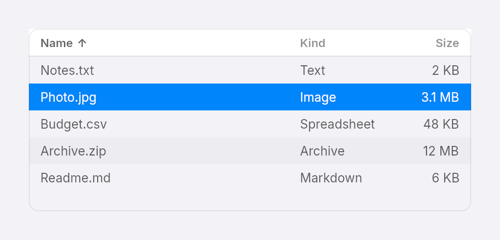
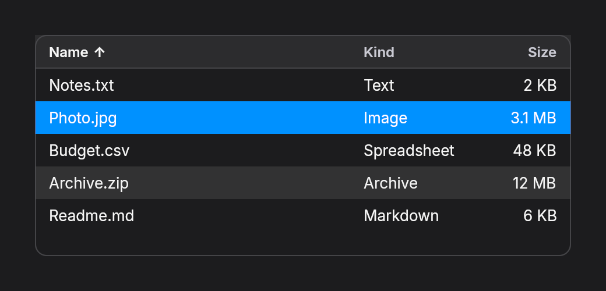

Tables
table(theme, columns, rows, cell) is a header row over a list of rows. Only the rows on screen are built, so a million rows cost the same as ten and scroll as fast as a list. Your app owns the data, the sort order and the selection.


fn table_files(theme: &Theme) -> Element<Msg> {
const FILES: [(&str, &str, &str); 5] = [
("Notes.txt", "Text", "2 KB"),
("Photo.jpg", "Image", "3.1 MB"),
("Budget.csv", "Spreadsheet", "48 KB"),
("Archive.zip", "Archive", "12 MB"),
("Readme.md", "Markdown", "6 KB"),
];
table(theme, vec![Column::new("Name").grow(2.0), Column::new("Kind").width(110.0), Column::new("Size").width(80.0).right()], FILES.len(), |row, column| {
let file = FILES[row];
text([file.0, file.1, file.2][column]).no_wrap()
})
.selected(Some(1))
.on_select(Msg::Row)
.sorted_by(0, true)
.on_sort(Msg::Sort)
.w(460.0)
.h(190.0)
.into()
}Columns
A Column is a title and a width. Column::new shares the leftover width equally with the other growing columns, grow(2.0) takes two parts instead of one, and width(110.0) fixes it in pixels. right() aligns the title and the cells to the right, for numbers.
Cells
cell(row, column) builds one cell, and can return any element. For text, return text(...).no_wrap(): the text stays on one line and is cut at the column edge instead of wrapping into the next row. Element::clip does the same cutting for anything else.
Selection and sorting
selected(Some(index))highlights a row, andon_selectturns a row index into the message pressing it sends.- Up and Down on a focused row select the row above or below, and scroll it into view even when it has not been built yet.
sorted_by(column, ascending)shows the arrow on a header, andon_sortmakes the headers pressable. The table does not sort anything: sort your data and pass it back.
Msg::Sort(column) => {
self.ascending = if self.column == column { !self.ascending } else { true };
self.column = column;
self.files.sort_by(/* by self.column, reversed unless self.ascending */);
}What is not there yet
Columns cannot be resized by dragging, rows cannot be selected in groups, and Tab walks through every built row instead of stopping once on the table. Screen readers see the table, its rows, cells and headers and which row is selected, but not the row and column counts.